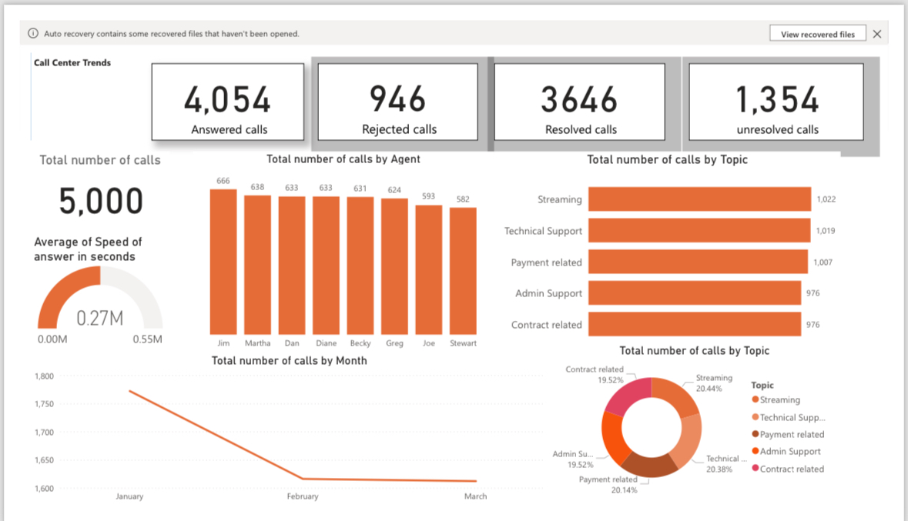

Call Center Performance Analysis
Project overview
This dashboard brings together call volume, call outcomes, agent activity, enquiry topics and monthly trends in one visual report. It illustrates how operational metrics can be presented to support further investigation of call-centre performance.
Tool: Power BI (include this only if you can confirm that you created the dashboard in Power BI).
Dashboard screenshot

Metrics visible in the screenshot
Based on the displayed counts, answered calls represent 81.08% of total calls and rejected calls represent 18.92%.
Questions the dashboard can help explore
- What proportion of calls were answered or rejected?
- How does call volume vary across agents?
- Which enquiry topics have the highest call volumes?
- How does call volume change from month to month?
- How do resolved and unresolved call counts compare?
Preliminary observations
- The displayed answered-call count is approximately 81.08% of total calls.
- Streaming and Technical Support appear among the highest-volume topics in the screenshot.
- Call volumes differ across the agents shown.
- The monthly chart appears to decline between January and March.
These are observations of the screenshot only. They do not establish why the trends occurred or prove that one agent performed better than another.
Potential next steps for the business
- Investigate why calls are rejected and whether patterns vary by time or topic.
- Review unresolved calls to identify possible follow-up needs.
- Compare agent workloads alongside quality and resolution measures, not call volume alone.
- Validate monthly values before making operational decisions.
Limitations
The original working file and source dataset are no longer available. The screenshot's underlying calculations, data preparation steps and detailed findings have not been independently verified. The average answer-speed gauge also needs validation because its displayed formatting and units are unclear.
This page documents a previous-work sample; it does not claim that the original dataset or interactive report has been recovered.